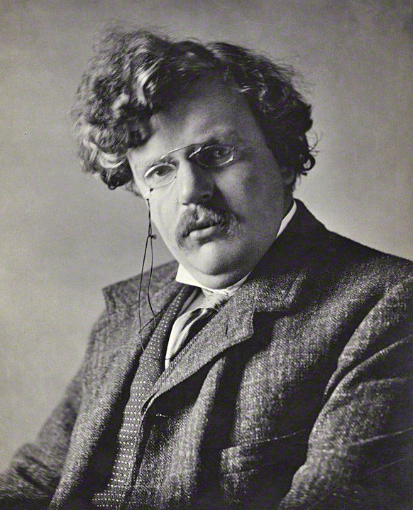

I've decided to give up all television, movies, video games, and internet activity (besides checking and answering e-mail and facebook messages). In short, I'm giving up a lot of things that I really enjoy... in fact, they're almost all of the things that I do for entertainment. Not things I do to be happy, mind you. But things I do to entertain myself.
When I told my wife what I was doing, she said to me, "Wow.... So, what are you going to DO?"
And I said, "Exactly."
It's not that any of these things are bad in and of themselves, nor am I trying to elaborate on the point that I or indeed all of us do them too much (though we probably do). What I am saying is that for me, entertainment - most potently in the forms of movies, television, games, and internet surfing - is something that I consume. The problem that I've been finding is that, mentally, what I consume does a poor job of defining or expressing who I really am. And given the amount of time I spend consuming, this is a problem.
For example, I've watched every single episode of the television show House. At 40-60 minutes an episode that's 90-140 hours I've spent watching it. But really, the fact that I watch House is an extremely small, inconsequential part of who I am or what I think of myself. If you told me I could never watch House again, I'd be mildly disappointed, but I'd move on pretty quickly.
The problem is, I don't just watch House. I watch House and CSI and Criminal Minds and South Park and The Daily Show and and Fringe and Family Guy and the Dog Whisperer and Bleach and the list goes on.
But if you were to ask me to describe myself, I'd probably never even mention what kind of television shows I liked. In fact, I'd probably never even bring up the fact that I watched TV. But total up all of the hours I've spent watching those shows (and most of them watched in my room, alone) and you have a truly massive chunk of my life.
Video games? Another massive chunk. And I don't even really consider myself a "gamer." I don't even own a next-gen system (360, PS3, or Wii). And yes, I am counting solitaire and digital sudoku, and minesweeper and bejeweled and whatever casual games I might pick up from time to time. Are you kidding me? My weekly high score on Bejeweled Blitz averages to around 500,000. It's embarrassing to admit how much time I've spent building up that particular skill. And is it a skill? Of course not. Then why am I treating it like one?
But browsing the internet? That time sink is the hardest one to calculate and probably the heaviest chunk of them all. Reading blogs and message boards, watching youtube videos, browsing wikipedia and running through hundreds of facebook and twitter updates is just the tip of a massive iceberg.
And again, I picture someone asking me, "Who are you? What really makes you tick? What do you do for fun?" You know what doesn't come to mind? "Browse the internet." And if it does, the thought is a humiliating one.
As it's been said before, it is always our actions, not our words or ideas, that define us. And what I've found in the past months, even years of my life, is that the way I defined myself and the way my actions defined me were not the same. At best, I was to myself, a hypocrite. At worst, my identity was being subverted.
Sometimes the things we consume, end up consuming us.
For all these hours I'd spent being entertained, I had not a shred of self-actualization. Not an ounce of productivity. Nothing to show for it. I had let my consumption spin out of control until it became who I was. Not that it changed my image of myself. Rather, in a more insidious way, it had actually changed who I was in spite of my image of myself.
This lent, I would like to speak as my actions dictate I must:
My name is David.
I spend most of my free time in front of television and computer screens.
I consume a large amount of internet-based frivolity.
I am very entertained and largely unfulfilled.
And I'm going to change that.
|
Favorite things to do:
|

|
Things I do each day:
|
||||||||||||
|
Courses taken:
|
Favorite Latin Quotes:
"ET IN ARCADIA EGO" "EX NIHILO NIHIL FIT" "VOX NIHILI" |